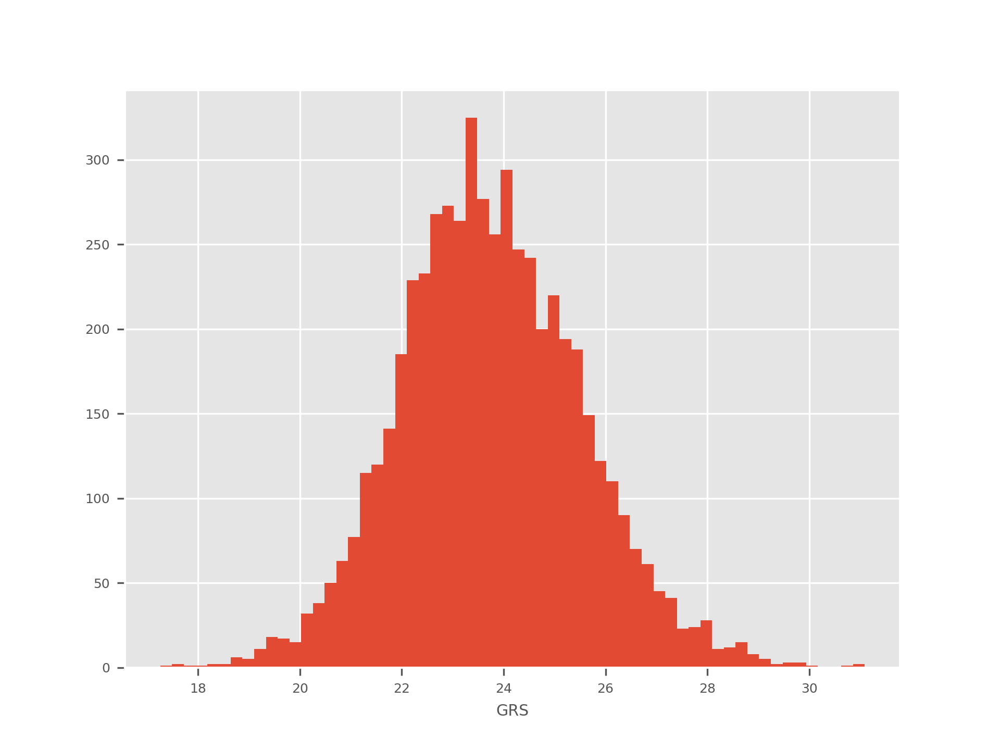
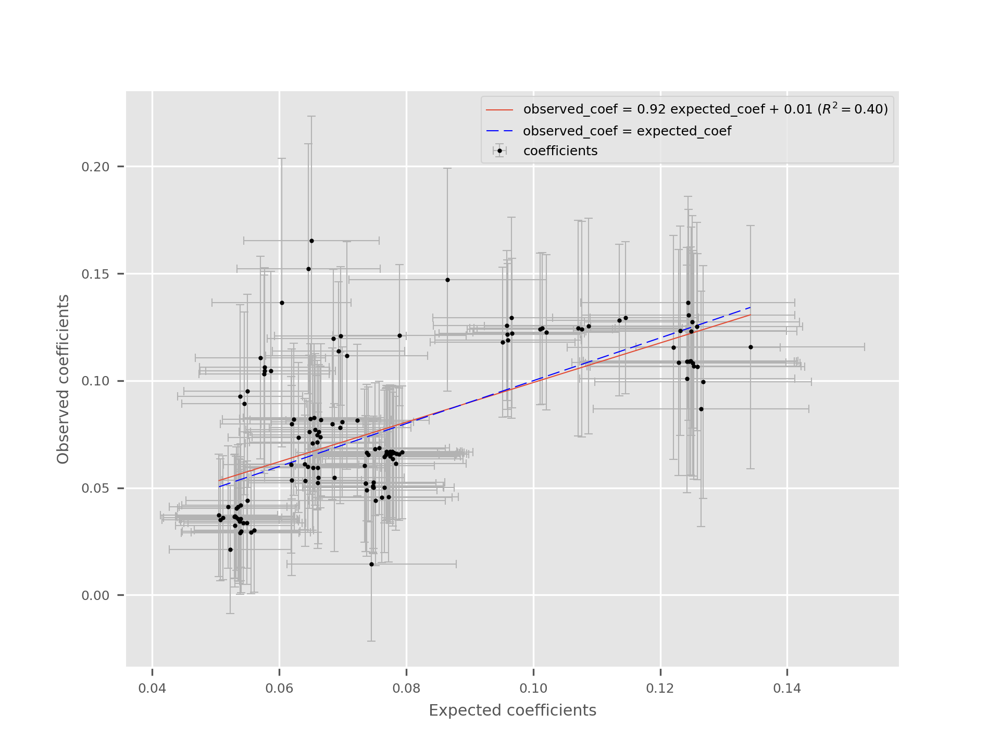

Command-line utilities¶
grs-create¶
The most common algorithm to create a GRS is the LD pruning followed by p-value thresholding approach. This script provides a convenient implementation of this algorithm that can be easily integrated to computational pipelines.
This method consists of the following steps:
- Rank the variants by increasing p-value.
- Select the top variant, include it in the GRS and exclude all variants in LD
at a pre-defined threshold (
--ld-threshold). - Repeat 2. until the p-value threshold is reached (
--p-threshold).
Note
If a maf column is present in the summary statistics association file,
all variants that are too rare will be automaticall excluded when reading
the summary statistics file. If it is not available, the MAF will be
computed from the genotype data to allow filtering, which is more
computationally intensive.
For now, a plink binary file is required for the reference. A population-specific reference panel like the 1000 genomes phase 3 should be used.
This script generates a ‘grs’ file that is suitable for computing the GRS using grs-compute.
usage: grs-create [-h] [--p-threshold P_THRESHOLD] [--target-n TARGET_N]
[--maf-threshold MAF_THRESHOLD]
[--ld-threshold LD_THRESHOLD]
[--ld-window-size LD_WINDOW_SIZE] [--region REGION]
[--exclude-region EXCLUDE_REGION]
[--exclude-ambiguous-alleles] [--exclude-no-reference]
--summary SUMMARY --reference REFERENCE [--output OUTPUT]
[--debug]
optional arguments:
-h, --help show this help message and exit
--p-threshold P_THRESHOLD
P-value threshold for inclusion in the GRS (default:
5e-8).
--target-n TARGET_N Target number of variants to include in the GRS.
--maf-threshold MAF_THRESHOLD
Minimum MAF to allow inclusion in the GRS (default
0.05).
--ld-threshold LD_THRESHOLD
LD threshold for the clumping step. All variants in LD
with variants in the GRS are excluded iteratively
(default 0.15).
--ld-window-size LD_WINDOW_SIZE
Size of the LD window used to find correlated
variants. Making this window smaller will make the
execution faster but increases the chance of missing
correlated variants (default 1Mb).
--region REGION Only consider variants located WITHIN a genomic
region. The expected format is 'chrCHR:START-END'. For
example: 'chr1:12345-22345'.
--exclude-region EXCLUDE_REGION
Only consider variants located OUTSIDE a genomic
region. The expected format is 'chrCHR:START-END'. For
example: 'chr1:12345-22345'.
--exclude-ambiguous-alleles
Exclude variants with ambiguous alleles (e.g. G/C or
A/T)
--exclude-no-reference
Exclude variants with no genotypes in the reference
panel.
--summary SUMMARY Path to the summary statistics files. Required columns
are 'name', 'chrom', 'pos', 'p-value', 'effect',
'reference' and 'risk'.
--reference REFERENCE
Path the binary plink file containing reference
genotypes. These genotypes will be used for LD
clumping.
--output OUTPUT, -o OUTPUT
Output prefix (default: grstools_selection).
--debug
grs-compute¶
Computes the GRS using a ‘.grs’ file and individual-level genotypes.
The GRS are computed using the following formula:
Where \(GRS_i\) is the genetic risk score for the ith sample, j indexes the genetic variants included in the score, \(\beta_j\) is the coefficient estimated from the summary statistics and \(X_{ij}\) is the number of effect alleles carried by individual i at variant j.
Note
If the coefficient (\(\beta\)) is negative, it’s additive inverse is used instead (\(-\beta\)) and the effect and reference alleles are swapped accordingly. This ensures that contributions to the GRS are always positive.
Note
For missing genotypes, the mean dosage with respect to the effect allele is used when computing the variant’s contribution. Another intuitive way of handling this case would have been to set the contribution to 0, but doing so is a stronger claim than using the mean, especially for variants with a MAF close to 0.5.
If supported imputation data formats are used to hold the genotype information, the variants are further weighted by the INFO score as a form of global genotype confidence weighting:
Note
At this point, few data formats are supported. This is dependant on the use of the “ImputedVariant” class in the geneparse reader.
usage: grs-compute [-h] [--genotypes GENOTYPES]
[--genotypes-format GENOTYPES_FORMAT]
[--genotypes-kwargs GENOTYPES_KWARGS] --grs GRS [--out OUT]
[--ignore-genotype-quality] [--skip-strand-check]
[--exclude-strand-ambiguous] [--reference REFERENCE]
[--debug]
Compute the risk score.
optional arguments:
-h, --help show this help message and exit
--genotypes GENOTYPES
File containing genotype data.
--genotypes-format GENOTYPES_FORMAT
File format of the genotypes in the reference
(default: plink).
--genotypes-kwargs GENOTYPES_KWARGS
Keyword arguments to pass to the genotypes container.
A string of the following format is expected:
'key1=value1,key2=value2,...It is also possible to
prefix the values by 'int:' or 'float:' to cast the
them before passing them to the constructor.
--grs GRS File describing the variants in the GRS. The expected
columns are 'name', 'beta', 'reference', 'risk'.
--out OUT Filename for the computed GRS (default:
computed_grs.csv).
--ignore-genotype-quality
For imputed variants, if this flag is set, the
variants will not be weighted with respect to their
quality score. By default, the weights are used if
available.
--skip-strand-check Skips all the strand validation checks and assume that
the strand in the genotype and GRS files are the same.
This option should only be used if the variants were
manually curated. This option is also assumed if no
--reference is provided (with a warning).
--exclude-strand-ambiguous
Exclude all strand ambiguous variants.
--reference REFERENCE
Plink prefix for the reference genotypes. This is used
to find tags when needed or to compute the MAF.
--debug
grs-mr¶
Mendelian randomization is a technique where genetic variants (or a genetic risk score (G)) is used to estimate the effect of an exposure (X) on an outcome (Y). Here, the estimation is done using the ratio method:
In the current implementation, bootstrap resampling is used to estimate the standard error which can be used for further inference.
usage: grs-mr [-h] [--grs-filename GRS_FILENAME] [--exposure EXPOSURE]
[--outcome OUTCOME] [--exposure-type EXPOSURE_TYPE]
[--outcome-type OUTCOME_TYPE]
[--phenotypes-filename PHENOTYPES_FILENAME]
[--phenotypes-sample-column PHENOTYPES_SAMPLE_COLUMN]
[--phenotypes-separator PHENOTYPES_SEPARATOR]
[--phenotype PHENOTYPE]
Estimate the effect of an exposure on an outcome using a GRS with an effect on
the exposure. Estimates are done using the ratio method.
optional arguments:
-h, --help show this help message and exit
--grs-filename GRS_FILENAME
--exposure EXPOSURE
--outcome OUTCOME
--exposure-type EXPOSURE_TYPE
Either continuous or discrete.
--outcome-type OUTCOME_TYPE
Either continuous or discrete.
--phenotypes-filename PHENOTYPES_FILENAME
--phenotypes-sample-column PHENOTYPES_SAMPLE_COLUMN
--phenotypes-separator PHENOTYPES_SEPARATOR
--phenotype PHENOTYPE
grs-utils¶
This tool contains multiple features to manipulate GRS after they have been computed. Most of these tools either generate plots (as png files) or modified versions of the computed GRS. The latter file format is simply a CSV with a ‘sample’ and a ‘grs’ column.
histogram¶
The histogram sub-command generates a histogram of all the GRS values. Here is an example:
quantiles¶
This function is used to dichotomize the GRS. The parameters are:
- -k The number of quantiles to take to form a group.
- -q The total number of quantiles.
Here are various examples of dichotomizations:
# Create two groups with respect to the median.
grs-utils quantiles my_grs.grs -k 1 -q 2
# 1st vs 5th quintiles.
grs-utils quantiles my_grs.grs -k 1 -q 5
# 1st vs 5th quintiles, but keeping all the samples (will be set to NA).
grs-utils quantiles my_grs.grs -k 1 -q 5 --keep-unclassified
The output file will contain two columns and a header: sample and
group. The group ‘0’ contains the individuals with lower values of the GRS
and the group ‘1’ contains individuals with high values of the GRS.
standardize¶
This function standardizes a GRS:
This function is useful when different GRS are to be compared. For example, is linear regression is used to assess the effect of a GRS on a given trait (Y), then the coefficient can be interpreted as the number of units increase in Y for a 1 s.d. increase in the GRS.
correlation¶
This utility takes two computed GRS files as input and plots the correlation between the GRS. This can be useful to test the variability of changing different hyperparameters (e.g. p-value threshold).
This script opens the plot in the interactive matplotlib viewer. From there, it can manipulated and saved to a file.
Here is an example:

On the plot, the linear regression fit is displayed as well as the identity line to quickly assess the agreement between GRS.
usage: grs-utils [-h]
{histogram,quantiles,standardize,correlation,beta-plot,annotate-nearest-gene,locus-overlap}
...
Utilities to manipulate computed GRS.
positional arguments:
{histogram,quantiles,standardize,correlation,beta-plot,annotate-nearest-gene,locus-overlap}
histogram Plot the histogram of the computed GRS.
quantiles Dichotomize the GRS using quantiles. Takes two
parameters: k and q where q is the number of quantiles
and k is the cutoff to be used for the discretization.
For example, if the 1st quintile is to be compared to
the 5th, use -q 5 -k 1. By default -k=1 and -q=2 which
means the median is used.
standardize Standardize the GRS (grs <- (grs - mean) / std).
correlation Plot the correlation between two GRS.
beta-plot Compute beta coefficients from given genotypes data
and compare them with beta coefficients from the grs
file.
annotate-nearest-gene
Annotate a GRS with the nearest gene for each SNP.
This script relies on an external gene annotation file
such as the GTF file provided by Ensembl.
locus-overlap Display variants in LD.
optional arguments:
-h, --help show this help message and exit
beta-plot¶
This utility compares the effect of variants between a summary statistics file in the GRS format and regression results using the user’s data. The goal is to ensure that the reported effect sizes are compatible and that there are no large or systematic discrepencies that could indicate a population or strand mismatch.
The utility also displays the standard errors on the plot. For the error of the expected coefficients, the standard errors are derived from the p-values and effect sizes.
Here is an example of the plot:
The execution also produces a text file displaying the SNPs information (chromosome, position, alleles, coefficients, standard errors, maf in the given population and n, the number of individuals used to compute each observed coefficient).
usage: grs-utils beta-plot [-h] --summary SUMMARY --genotypes-filename
GENOTYPES_FILENAME
[--genotypes-format GENOTYPES_FORMAT]
[--genotypes-kwargs GENOTYPES_KWARGS] --phenotype
PHENOTYPE --phenotypes-filename PHENOTYPES_FILENAME
[--phenotypes-separator PHENOTYPES_SEPARATOR]
[--phenotypes-sample-column PHENOTYPES_SAMPLE_COLUMN]
--test {linear,logistic} [--no-error-bars]
[--out OUT] [--svg] [--cpus CPUS] [--covar COVAR]
optional arguments:
-h, --help show this help message and exit
--summary SUMMARY File describing the selected variants for GRS. The
file must be in grs format
--genotypes-filename GENOTYPES_FILENAME
File containing genotype data.
--genotypes-format GENOTYPES_FORMAT
File format of the genotypes in the reference
(default:plink).
--genotypes-kwargs GENOTYPES_KWARGS
Keyword arguments to pass to the genotype container.A
string of the following format is expected:
key1=value1,key2=value2...It is also possible to
prefix the values by 'int:' or 'float:' to cast them
before passing them to the constructor.
--phenotype PHENOTYPE
Column name of phenotype in phenotypes file
--phenotypes-filename PHENOTYPES_FILENAME
File containing phenotype data
--phenotypes-separator PHENOTYPES_SEPARATOR
Separator in the phenotypes file (default:,).
--phenotypes-sample-column PHENOTYPES_SAMPLE_COLUMN
Column name of target phenotype (default:sample).
--test {linear,logistic}
Test to perform for beta coefficients estimation
--no-error-bars Do not show error bars on the plot
--out OUT, -o OUT Output name for beta coefficients plot and file
(default:observed_coefficients).
--svg Use svg format for output plot (else will be .png)
--cpus CPUS Number of cpus to use for execution (default: number
of cpus - 1 = 7).
--covar COVAR Covariates other than the SNPs from summary stats.
Covariates should be in string form, separated by ,
covar1,covar2,covar3...
grs-evaluate¶
After calculating a GRS, it is important to quantify and evaluate its predictive performance. This tool provides multiple commands to easily run common diagnostics and validation steps.
regress¶
The regress subcommand assesses the effect of the GRS as a continuous trait on a given binary or continuous phenotype. In the case of a continuous outcome, linear regression is used and a plot like the following is generated:

In this plot, it is possible to quickly validate that the GRS indeed has an effect on the trait of interest. It is also possible to estimate the fraction of the variance explained by the GRS (corresponding to the \(R^2\) value or to evaluate the expected change in the phenotype attributable to a 1 unit change in the GRS (\(\beta\) coefficient and its 95% CI). Note that standardizing the GRS first is useful to get an interpretation in units of GRS s.d. and to make comparisons across different GRS possible.
If the outcome is discrete, then logistic regression is better suited to evaluate the fit with the GRS. In this case, the generated plot looks as follows:

In this plot, the perspective is somewhat reversed, when compared with the linear case. The GRS is now in the y axis and its distribution is shown in cases and controls. The more general term “level” is used to describe the discrete numerical values of the phenotype as it could be used for factor variables.
The results for the logistic regression are shown on the plot. The OR corresponds to the expected increase in odds for a one unit increase in the GRS.
dichotomize-plot¶
This plot can be used to select an optimal quantile for dichotmization. The tradeoff between the number of individuals classified and the GRS effect size is highlighted. Note that selecting a local maxima in this plot can be a bad idea because it increases the risk of overfitting. Traditional approaches such as using a test set, using cross-validation or bootstrapping can be used to select a more robust threshold.
The dichotmization is done by comparing the extremums of the distribution. For example, at the 0.25 quantile, the first quartile (1/4) is compared to the last quartile (4/4). All of the individuals in between can be used to form an “intermediate” group or can be excluded from downstream analyses. This is why the right axis represents the number of individuals that are classified in either the “high” or “low” group for a given dichotmization.

ROC¶
To evaluate the predictive accuracy of a GRS, it can be useful to look at its ROC curve.

usage: grs-evaluate [-h] {regress,dichotomize-plot,roc} ...
Utilities to evaluate the performance of GRS.
positional arguments:
{regress,dichotomize-plot,roc}
regress Regress the GRS on a discrete or continuous outcome.
dichotomize-plot A plot to help identify ideal dichotmizatin
parameters.
roc Draw a ROC curve for a GRS (given a binary phenotype).
optional arguments:
-h, --help show this help message and exit